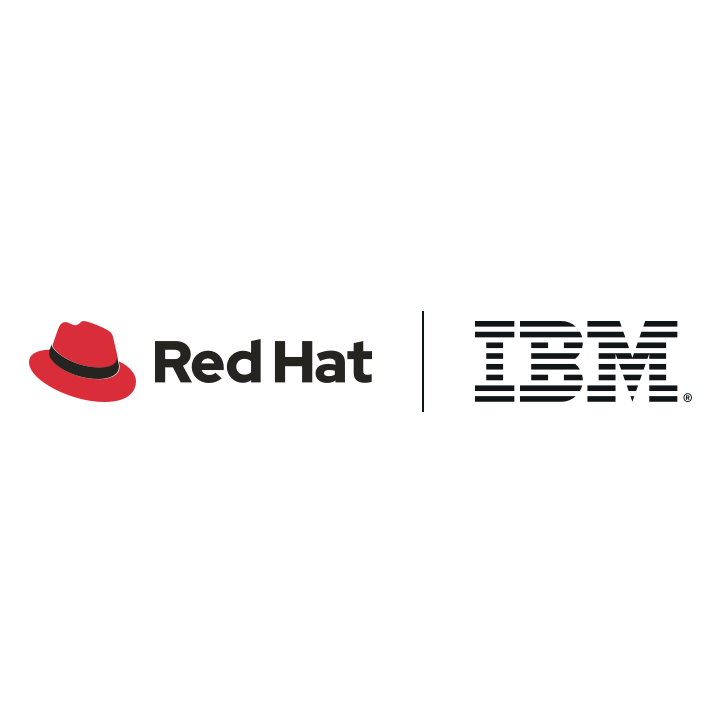
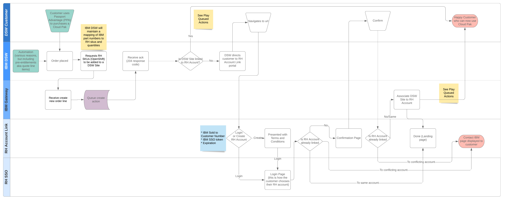
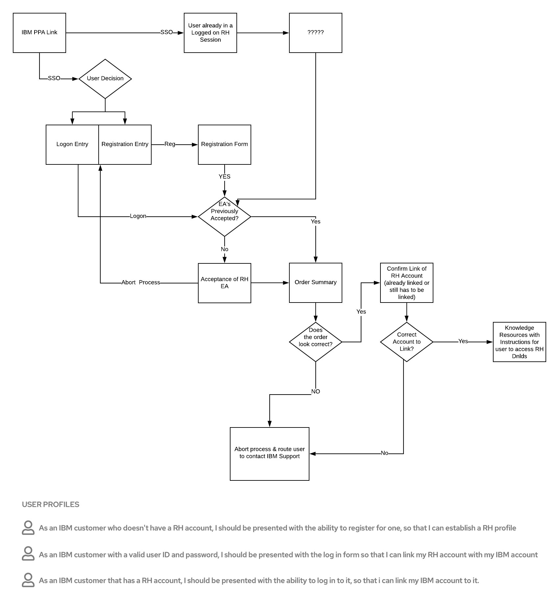
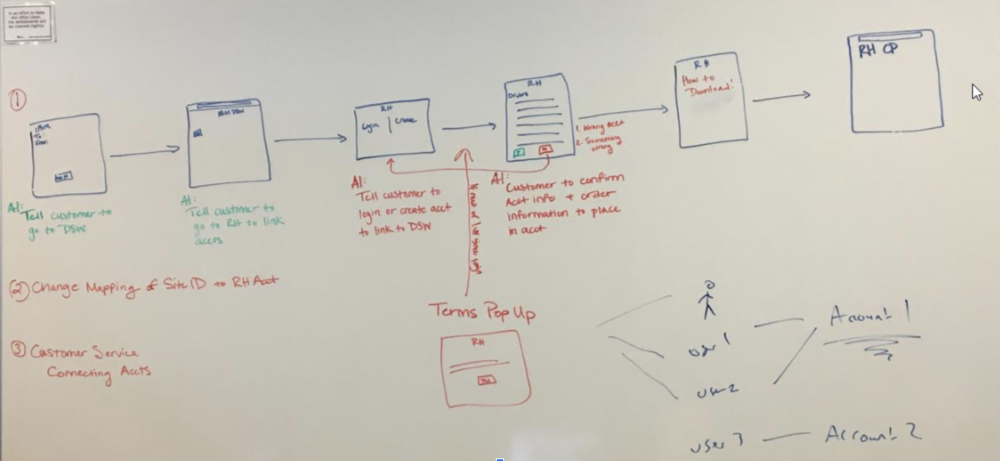
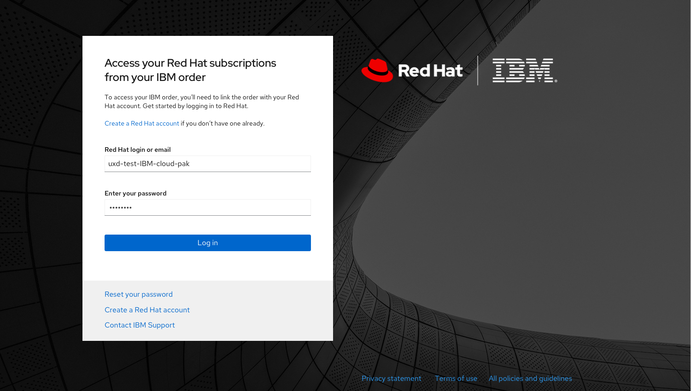
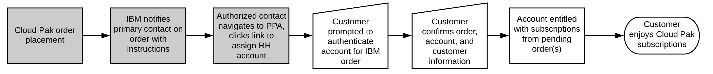

A customer-facing entitlement platform enabling IBM customers to activate Red Hat subscriptions without requiring manual seller intervention.

IBM needed a scalable way for customers purchasing Cloud Pak bundles to gain immediate access to Red Hat subscriptions. Without a self-service mechanism, entitlement workflows created friction for customers and delayed revenue recognition.
Lead UX Designer
UX Strategy, User Flows, Wireframes, Interaction Design, Stakeholder Alignment
Sketch, Marvel, Lucidchart, Mural, Google Docs
IBM revenue recognition depended upon customers being able to access and use purchased products immediately. However, several Red Hat offerings required an entitled Red Hat account.
IBM sellers could not be expected to create or manage Red Hat accounts on behalf of customers, creating a significant gap between purchase and activation.
The first phase focused on understanding the existing customer journey and identifying failure points between IBM Passport Advantage and Red Hat account management.

Three primary user paths emerged:

Initial whiteboard sessions focused on reducing friction while maintaining account security and ensuring customers clearly understood the linking process.

The final experience allowed customers to authenticate, verify ownership of the IBM order, and link a Red Hat account through a guided self-service workflow.

The entitlement process was designed to be simple, repeatable, and scalable for future IBM partnerships.

This project was my first opportunity to work directly across both Red Hat and IBM teams. Success depended as much on stakeholder alignment and systems thinking as it did on interface design.
The resulting framework established a repeatable entitlement model that could be adapted for future partner integrations.